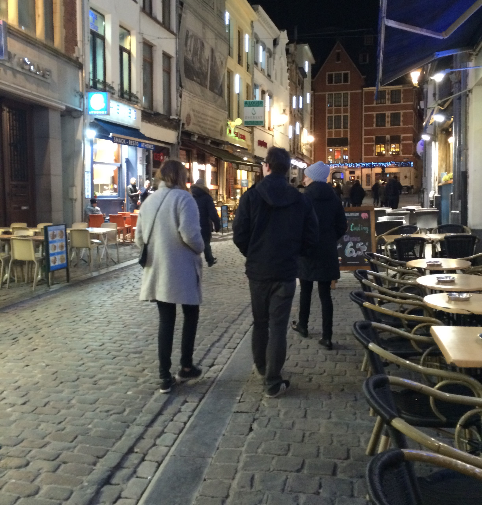

My Trip
Paris, Brussels, Amsterdam
Pictures
BRUSSELS
This is a picture of part of the area known as "The Grand Place" Brussels. The whole are is inclosed by buldings dating back to the late 1600's.
AMSTERDAM
This is a picture of the Rijks museum in Amsterdam. I took it from a garden that was adjacent to the museum.
PARIS

This picture is of my family walking down a small street in Paris. There are small cobblestone streets like this all around paris.